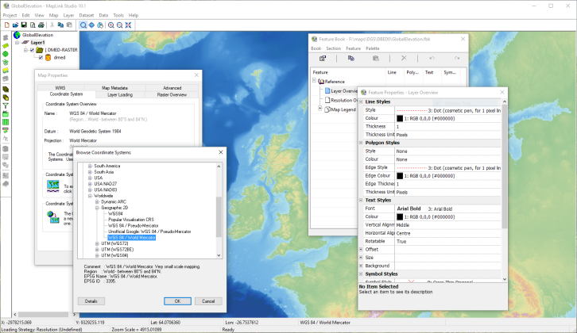

Main Elements of MapLink Pro Studio
Some of the major elements of MapLink Pro Studio are shown below.

Project Tree
The Project Tree gives a clear view of the structure of the MapLink Pro Studio project. This structure will generally apply also to the output maps that are created using MapLink Pro Studio. The Project Tree allows you to navigate rapidly through the various levels of the project, and to see just the information that is relevant in each case.
The full Project Tree hierarchy is as follows:
- The Map. This is the root of the Project Tree. All properties that apply to the map as a whole, rather than to individual layers, datasets or data files, are accessible at this level.
- The Layers. The project comprises one or more layers, which correspond to the layers created in the output map. In a run-time application, layers will be loaded and discarded as appropriate in order to ensure that the user sees the representation of the map that is appropriate given the specific area and level of detail requested. Layers can contain different views of the same data or can contain completely different data.
- The Current Layer : The current layer of the map is that layer which has been selected within the project tree. It is not necessarily the same as the active layer.
- The Active Layer : The active layer is the layer that has been loaded into memory, and can therefore be rendered in the Map View. Only one layer can be active at a time, in order to minimise memory usage. If automatic data loading has been selected, MapLink Pro Studio will always attempt to make the active layer the same as the current layer by processing the required data. This is generally not desirable when working with large input datasets.
- The Datasets. Within a layer, you can combine data from a variety of sources. Each separate source of data, sharing a common physical file format and a common coordinate system, is called a dataset.
- The Data Files. The lowest level of detail accessible in the Project Tree is an individual data file. Map data files contain geographical features that are grouped into Feature Classes. The relationship between data files and feature classes is highly dependent on the specific data format. Sometimes, a single data file will contain features of only one class; in other cases multiple feature classes are contained within each file. MapLink also provides an option to create feature subclasses using feature attributes to define the feature class groupings.
Map View
The Map View shows the appearance of the data that has been processed by MapLink Pro Studio, at the appropriate level (Map, Layer, Dataset, Data File) depending upon the current selection in the Project Tree:
- If the Map is selected in the Project Tree, the Map View will show diagrammatically the extents of the layers contained within the map.
- If one of the Layers is selected in the Project Tree, the Map View will show the contents of the Current Layer provided that it is also the Active Layer
- If one of the Datasets is selected in the Project Tree, the Map View will show the contents of this dataset provided that it is part of the Active Layer
- If one of the Data Files is selected in the Project Tree, the Map View will show the contents of this data file provided that it is part of the Active Layer
Feature Book
The Feature Book is one of the main tools provided within MapLink Pro Studio. It provides a powerful, flexible approach to the management of map data rendering. The appearance of each feature class in the map data is controlled by choosing appropriate options for line, polygon, symbol and text rendering. The effort needed to render the map data can be kept to a minimum by copying rendering from one feature class to another, and by linking feature classes together using inheritance. Entire sections of the Feature Book can be imported from other Feature Books.
Property Sheets
The processing options for the Map, the Layers, the Datasets and the Data Files are grouped into Property Sheets. You can access each individual processing facility from the main menu, from popup menus available on the Feature Tree or from the toolbars. Once the Property Sheet is open, you can then move quickly from one processing facility to the others simply by clicking on the appropriate tabs.
Toolbars
Dockable Toolbars provide convenient access to the most commonly used MapLink Pro Studio functions. Separate toolbars are provided for the basic project-related operations, for the main processing elements and for navigation around the Map View.
Status Bar
The Status Bar gives you useful information concerning the map.
The first line of the status bar shows:
- The X and Y values of the coordinate at the current cursor location, in map units.
- The latitude in degrees of the coordinate at the current cursor location, when an output coordinate system has been defined.
- The longitude in degrees of the coordinate at the current cursor location, when an output coordinate system has been defined.
- The projection and datum in use, when an output coordinate system has been defined.
- The feature, if any, that has been found at the current cursor location. The feature class, feature name (where defined) and feature type are displayed.
The second line of the status bar shows:
- The current layer loading strategy defined for the map.
- General information, such as brief descriptions of the facilities available from menus and toolbars.
 > >Creating a Map, Step by Step >
> >Creating a Map, Step by Step >
> >What is a Map? >
> >What is a layer? >
> >What is a Dataset? >